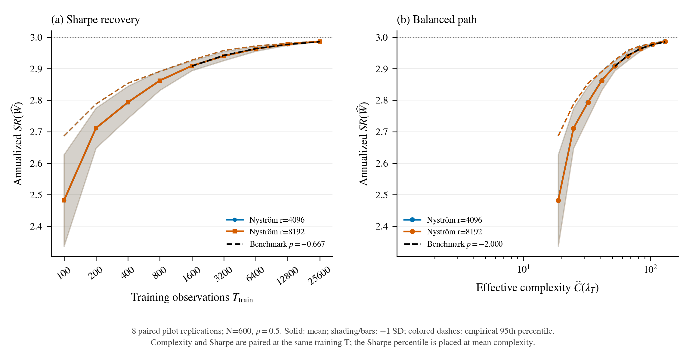
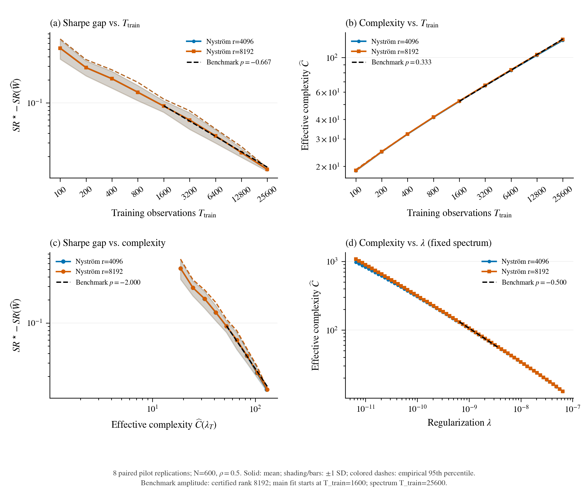
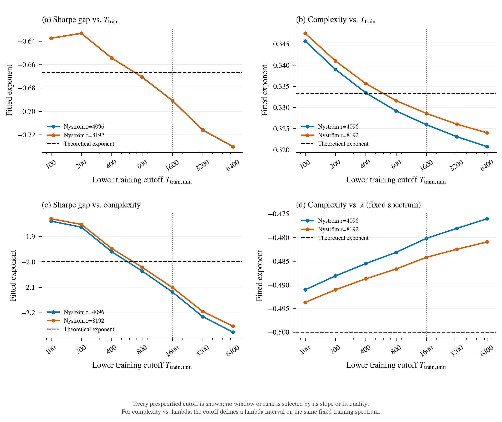

8 repliche per rango, separate dalla conferma a 100 per cella. Stessa economia, kernel non periodico, semi appaiati e C0 congelato. Tutte le ascisse temporali indicano soltanto il training. STD campionaria tra repliche e 95esimo percentile empirico: con otto repliche la stima del percentile e ancora preliminare.
I benchmark sono asintotici. Nessun dato e tagliato per far coincidere la pendenza. Tutti i tagli piccoli e grandi sono pubblicati; il fit principale resta da 1600. L'intervallo temporale arriva a 25600, mentre la prima tabella preliminare terminava a 12800: le due finestre non sono intercambiabili.
Figure PDF vettoriali; media, STD e percentile; tutte le pendenze e finestre.
| rank | metric | T_train_min | T_train_max | expected_exponent | exponent | exponent_ci_low | exponent_ci_high | fixed_power_R_squared | fit_points |
|---|---|---|---|---|---|---|---|---|---|
| 4096 | SR_T | 1600 | 25600 | -0.666667 | -0.690780 | -0.732467 | -0.645586 | 0.998382 | 5 |
| 4096 | C_T | 1600 | 25600 | 0.333333 | 0.325929 | 0.325634 | 0.326228 | 0.999238 | 5 |
| 4096 | SR_C | 1600 | 25600 | -2.000000 | -2.118439 | -2.247404 | -1.979722 | 0.997763 | 5 |
| 4096 | C_lambda | 1600 | 25600 | -0.500000 | -0.480170 | -0.480237 | -0.480109 | 0.998230 | 13 |
| 8192 | SR_T | 1600 | 25600 | -0.666667 | -0.690706 | -0.732413 | -0.645503 | 0.998382 | 5 |
| 8192 | C_T | 1600 | 25600 | 0.333333 | 0.328597 | 0.328302 | 0.328895 | 0.999624 | 5 |
| 8192 | SR_C | 1600 | 25600 | -2.000000 | -2.101153 | -2.229140 | -1.963565 | 0.997807 | 5 |
| 8192 | C_lambda | 1600 | 25600 | -0.500000 | -0.484179 | -0.484245 | -0.484119 | 0.998893 | 13 |
If no rank certifies the tolerance, the highest studied rank only anchors benchmark curves; it is not declared numerically certified.
| rank | maximum_balanced_relative_C_error_bound | maximum_fit_window_relative_C_error_bound | passes_certified_tolerance |
|---|---|---|---|
| 4096 | 0.024938 | 0.024938 | False |
| 8192 | 0.011847 | 0.011847 | True |
Il bound della traccia e conservativo: il mancato superamento della soglia non prova un errore effettivo superiore alla soglia.
I certificati puntuali racchiudono C del kernel empirico completo fra C Nystrom e min(C Nystrom + errore certificato, T_train). Mediando prima questi limiti e usando i pesi con segno della regressione log-log si racchiude anche la pendenza della media. Sono intervalli numerici condizionati ai campioni osservati, distinti dai bootstrap tra repliche; non sono bound sulla complessita di popolazione o sullo Sharpe. Se il benchmark asintotico e esterno all'intervallo, la pendenza del kernel empirico completo su quella finestra e diversa dal benchmark. La selezione del rango conserva il solo criterio di errore del 2%.
| Rango | Rate | Pendenza Nystrom | Minimo kernel completo | Massimo kernel completo | Benchmark | Benchmark compreso |
|---|---|---|---|---|---|---|
| 4096 | C_T | 0.325929 | 0.321395 | 0.335833 | 0.333333 | True |
| 4096 | C_lambda | -0.480170 | -0.497703 | -0.470953 | -0.500000 | False |
| 8192 | C_T | 0.328597 | 0.326421 | 0.333334 | 0.333333 | True |
| 8192 | C_lambda | -0.484179 | -0.492567 | -0.479759 | -0.500000 | False |
Intervalli numerici su tutti i tagli e ranghi.



| rank | metric | T_train_min | T_train_max | expected_exponent | exponent | exponent_ci_low | exponent_ci_high | fixed_power_R_squared | fit_points |
|---|---|---|---|---|---|---|---|---|---|
| 4096 | SR_T | 100 | 25600 | -0.666667 | -0.637546 | -0.660287 | -0.616001 | 0.993283 | 9 |
| 4096 | C_T | 100 | 25600 | 0.333333 | 0.345690 | 0.344820 | 0.346492 | 0.999353 | 9 |
| 4096 | SR_C | 100 | 25600 | -2.000000 | -1.840089 | -1.907891 | -1.776290 | 0.987036 | 9 |
| 4096 | C_lambda | 100 | 25600 | -0.500000 | -0.491045 | -0.491131 | -0.490963 | 0.999235 | 26 |
| 4096 | SR_T | 200 | 25600 | -0.666667 | -0.633367 | -0.659842 | -0.603607 | 0.983010 | 8 |
| 4096 | C_T | 200 | 25600 | 0.333333 | 0.339000 | 0.338395 | 0.339667 | 0.999543 | 8 |
| 4096 | SR_C | 200 | 25600 | -2.000000 | -1.863688 | -1.942217 | -1.774784 | 0.963635 | 8 |
| 4096 | C_lambda | 200 | 25600 | -0.500000 | -0.488115 | -0.488196 | -0.488039 | 0.999076 | 23 |
| 4096 | SR_T | 400 | 25600 | -0.666667 | -0.654470 | -0.687821 | -0.617536 | 0.994982 | 7 |
| 4096 | C_T | 400 | 25600 | 0.333333 | 0.333456 | 0.332985 | 0.333969 | 0.999586 | 7 |
| 4096 | SR_C | 400 | 25600 | -2.000000 | -1.960141 | -2.061032 | -1.849108 | 0.989792 | 7 |
| 4096 | C_lambda | 400 | 25600 | -0.500000 | -0.485513 | -0.485588 | -0.485441 | 0.998876 | 20 |
| 4096 | SR_T | 800 | 25600 | -0.666667 | -0.670680 | -0.709088 | -0.632125 | 0.996994 | 6 |
| 4096 | C_T | 800 | 25600 | 0.333333 | 0.329191 | 0.328732 | 0.329696 | 0.999474 | 6 |
| 4096 | SR_C | 800 | 25600 | -2.000000 | -2.035746 | -2.153866 | -1.917765 | 0.995675 | 6 |
| 4096 | C_lambda | 800 | 25600 | -0.500000 | -0.483129 | -0.483199 | -0.483062 | 0.998631 | 17 |
| 4096 | SR_T | 1600 | 25600 | -0.666667 | -0.690780 | -0.732467 | -0.645586 | 0.998382 | 5 |
| 4096 | C_T | 1600 | 25600 | 0.333333 | 0.325929 | 0.325634 | 0.326228 | 0.999238 | 5 |
| 4096 | SR_C | 1600 | 25600 | -2.000000 | -2.118439 | -2.247404 | -1.979722 | 0.997763 | 5 |
| 4096 | C_lambda | 1600 | 25600 | -0.500000 | -0.480170 | -0.480237 | -0.480109 | 0.998230 | 13 |
| 4096 | SR_T | 3200 | 25600 | -0.666667 | -0.715918 | -0.785956 | -0.635100 | 0.997559 | 4 |
| 4096 | C_T | 3200 | 25600 | 0.333333 | 0.323111 | 0.322809 | 0.323416 | 0.998892 | 4 |
| 4096 | SR_C | 3200 | 25600 | -2.000000 | -2.215396 | -2.434286 | -1.963810 | 0.994971 | 4 |
| 4096 | C_lambda | 3200 | 25600 | -0.500000 | -0.478065 | -0.478131 | -0.478008 | 0.997871 | 10 |
| 4096 | SR_T | 6400 | 25600 | -0.666667 | -0.730124 | -0.805399 | -0.642733 | 0.993985 | 3 |
| 4096 | C_T | 6400 | 25600 | 0.333333 | 0.320739 | 0.320507 | 0.320968 | 0.998460 | 3 |
| 4096 | SR_C | 6400 | 25600 | -2.000000 | -2.276344 | -2.510533 | -2.003313 | 0.988369 | 3 |
| 4096 | C_lambda | 6400 | 25600 | -0.500000 | -0.476027 | -0.476092 | -0.475973 | 0.997463 | 7 |
| 8192 | SR_T | 100 | 25600 | -0.666667 | -0.637512 | -0.660254 | -0.615963 | 0.993280 | 9 |
| 8192 | C_T | 100 | 25600 | 0.333333 | 0.347524 | 0.346653 | 0.348325 | 0.999385 | 9 |
| 8192 | SR_C | 100 | 25600 | -2.000000 | -1.830565 | -1.897907 | -1.767053 | 0.986656 | 9 |
| 8192 | C_lambda | 100 | 25600 | -0.500000 | -0.493718 | -0.493803 | -0.493635 | 0.999535 | 26 |
| 8192 | SR_T | 200 | 25600 | -0.666667 | -0.633325 | -0.659809 | -0.603572 | 0.983003 | 8 |
| 8192 | C_T | 200 | 25600 | 0.333333 | 0.341003 | 0.340399 | 0.341671 | 0.999634 | 8 |
| 8192 | SR_C | 200 | 25600 | -2.000000 | -1.852920 | -1.930873 | -1.764567 | 0.962731 | 8 |
| 8192 | C_lambda | 200 | 25600 | -0.500000 | -0.491040 | -0.491121 | -0.490965 | 0.999434 | 23 |
| 8192 | SR_T | 400 | 25600 | -0.666667 | -0.654423 | -0.687772 | -0.617489 | 0.994978 | 7 |
| 8192 | C_T | 400 | 25600 | 0.333333 | 0.335653 | 0.335182 | 0.336166 | 0.999756 | 7 |
| 8192 | SR_C | 400 | 25600 | -2.000000 | -1.947399 | -2.047649 | -1.837029 | 0.989194 | 7 |
| 8192 | C_lambda | 400 | 25600 | -0.500000 | -0.488720 | -0.488796 | -0.488649 | 0.999305 | 20 |
| 8192 | SR_T | 800 | 25600 | -0.666667 | -0.670626 | -0.709042 | -0.632062 | 0.996994 | 6 |
| 8192 | C_T | 800 | 25600 | 0.333333 | 0.331607 | 0.331148 | 0.332113 | 0.999742 | 6 |
| 8192 | SR_C | 800 | 25600 | -2.000000 | -2.020929 | -2.138275 | -1.903685 | 0.995295 | 6 |
| 8192 | C_lambda | 800 | 25600 | -0.500000 | -0.486653 | -0.486723 | -0.486587 | 0.999147 | 17 |
| 8192 | SR_T | 1600 | 25600 | -0.666667 | -0.690706 | -0.732413 | -0.645503 | 0.998382 | 5 |
| 8192 | C_T | 1600 | 25600 | 0.333333 | 0.328597 | 0.328302 | 0.328895 | 0.999624 | 5 |
| 8192 | SR_C | 1600 | 25600 | -2.000000 | -2.101153 | -2.229140 | -1.963565 | 0.997807 | 5 |
| 8192 | C_lambda | 1600 | 25600 | -0.500000 | -0.484179 | -0.484245 | -0.484119 | 0.998893 | 13 |
| 8192 | SR_T | 3200 | 25600 | -0.666667 | -0.715823 | -0.785886 | -0.634974 | 0.997568 | 4 |
| 8192 | C_T | 3200 | 25600 | 0.333333 | 0.326062 | 0.325762 | 0.326367 | 0.999426 | 4 |
| 8192 | SR_C | 3200 | 25600 | -2.000000 | -2.195107 | -2.412085 | -1.945732 | 0.995877 | 4 |
| 8192 | C_lambda | 3200 | 25600 | -0.500000 | -0.482489 | -0.482554 | -0.482433 | 0.998672 | 10 |
| 8192 | SR_T | 6400 | 25600 | -0.666667 | -0.730013 | -0.805324 | -0.642589 | 0.994001 | 3 |
| 8192 | C_T | 6400 | 25600 | 0.333333 | 0.324014 | 0.323784 | 0.324242 | 0.999169 | 3 |
| 8192 | SR_C | 6400 | 25600 | -2.000000 | -2.253008 | -2.485018 | -1.982816 | 0.990056 | 3 |
| 8192 | C_lambda | 6400 | 25600 | -0.500000 | -0.480917 | -0.480983 | -0.480864 | 0.998428 | 7 |